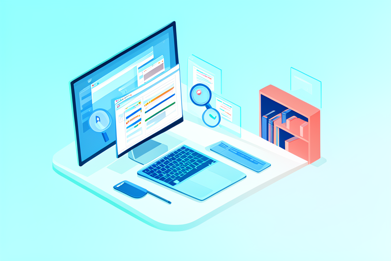

#03｜分類03: 情報収集・リサーチ・Web利用 2026-11-23

【4OS徹底比較】スクリーンショット・画面録画の最短手順と保存先トラブル対処｜Windows 11 / macOS / Linux(Ubuntu) / iPad
「仕事で急に画面をキャプチャしたいけれど、どのボタンを押せばいいか忘れてしまった…」「録画したはずのファイルがどこにも見当たらない！」といった経験はありませんか？
OSごとに操作体系が異なるため、複数のデバイスを使い分けるユーザーほど、それぞれの「標準機能」の癖を把握しておくことは重要です。この記事では、Windows、macOS、Linux（Ubuntu）、そしてiPadOSの4つの主要環境において、サードパーティ製アプリを一切使わず、標準搭載のツールやコマンドのみで完結する最短手順を徹底比較します。
また、初心者が陥りやすい「保存先の迷子」や、ブラウザでの「Webページ縦長保存」の裏技についても詳しく解説します。
4OS比較早見表
| 機能 | Windows 11 | macOS | Linux (Ubuntu) | iPadOS |
|---|---|---|---|---|
| スクショ（範囲指定） | Win + Shift + S |
Cmd + Shift + 4 |
gnome-screenshot |
ボタン同時押し |
| 画面録画 | Xbox Game Bar (Win + G) |
QuickTime Player | ffmpeg (CLI) |
コントロールセンター |
| Webページ縦長保存 | 印刷 → PDF保存 | 印刷 → PDF保存 | 印刷 → PDF保存 | サードパーティ推奨 |
| 主な保存先 | クリップボード / 指定フォルダ | デスクトップ / Finder | ~/Screenshots |
写真アプリ |
1. Windows 11：Snipping Tool と Xbox Game Bar
Windowsでは、直感的なGUI操作と、ゲーミング機能から派生した録画機能の組み合わせが標準となっています。
【実例手順】
- スクリーンショット:
Win + Shift + Sキーを押します。画面上部にスニップツールが表示されるので、マウスで範囲を選択してください。画像はクリップボードにコピーされるため、そのままメモ帳やSlack等にCtrl + Vで貼り付け可能です。 - Web ページ縦長保存: 標準機能では「全ページキャプチャ」ボタンはありません。代替案として「印刷 → PDF保存」を使いましょう。ブラウザで
Ctrl + Pを押し、送信先を「Microsoft Print to PDF」または「PDFとして保存」にし、ページ範囲を指定して実行します。 - 画面録画:
Win + Gキーを押して Xbox Game Bar を起動します。上部のカメラアイコンをクリックし、録画ボタン（●）を押します。終了後は自動的に以下のフォルダへ保存されます。 - 保存先：
C:\Users\ユーザー名\Videos\Captures
【よくあるトラブルと解決法】
- 「Win + Shift + S」が反応しない場合
- 設定 > システム > スニップツールを開き、「スナップショットの取得を有効にする」がオンか確認してください。また、Microsoft Storeからアプリの更新がないかチェックします。
- Xbox Game Bar で録画できない（灰色になっている）場合
- Windowsの「プライバシーとセキュリティ」設定で、ゲームバーの使用権限がオンになっているか確認してください。
- 「保存先が見つからない」というエラーが出る場合
Videos\Capturesフォルダが存在しない場合は、Windows Updateを適用するか、システムファイルの整合性をチェックする必要があります。
2. macOS：Shift + Command + S と QuickTime Player
macOSはショートカットキーの習熟度が重要です。特に「Optionキー」の有無で挙動が変わる点に注意が必要です。
【実例手順】
- スクリーンショット:
Shift + Command + 4を押します。マウスが十字に変わったら範囲をドラッグします。Tip:Optionキーを押しながらドラッグすると、解像度を指定して撮影可能です。ファイルはデフォルトでデスクトップに保存されます。 - Web ページ縦長保存: Safariで対象ページを開き、
Cmd + Pを押します。プリントダイアログの左下にある「PDF」ボタンをクリックするか、プレビュー画面から「PDFとして保存」を選択します。 - 画面録画: Spotlight（
Cmd + Space）で「QuickTime Player」と入力して起動します。メニューの「ファイル > 新しいビデオ記録」を選択し、録画ボタンを押します。
【よくあるトラブルと解決法】
- 「Shift + Command + S」が機能しない場合
- システム設定 > キーボード > ショートカットで競合がないか確認してください。BetterTouchToolなどの外部アプリを入れている場合はそちらの設定も確認が必要です。
- QuickTime Player で録画できない場合
- Apple Siliconへの移行に伴う権限の問題がある場合があります。ターミナルから
brew install ffmpeg等を検討するか、システム設定の「画面収録」権限を確認してください。 - 「保存先が見つからない」というエラーが出る場合
- Finderの「最近の項目」にない場合、
~/Movies/内のフォルダを確認してください。存在しない場合は手動でMovies Recsフォルダを作成すると解決する場合があります。
3. Linux (Ubuntu): gnome-screenshot と ffmpeg
Linux環境ではCLI（コマンドライン）を組み合わせることで、より高度な自動化や一貫性を保つことができます。
【実例手順】
- スクリーンショット: ターミナルで
gnome-screenshotを実行します。
bash # 全画面撮影 gnome-screenshot -f screenshot.png # 範囲指定撮影 gnome-screenshot -a
デフォルトでは/home/ユーザー名/Screenshotsに保存されます。 - Web ページ縦長保存: Firefox等のブラウザで
Ctrl + Pを押し、システムにインストールした「Print to PDF」ドライバを使用して保存します。またはCLIツールwkhtmltoimageを使用します。
bash # wkhtmltoimageを使用した例 wkhtmltoimage https://example.com -o output.png - 画面録画: 標準の
ffmpegコマンドを使用します（未導入ならsudo apt install ffmpeg）。
bash # 基本的な録画コマンド例 ffmpeg -f x11grab -video_size 1920x1080 -i :0.0 -c:v libx264 -pix_fmt yuv420p output.mp4
【よくあるトラブルと解決法】
- 「gnome-screenshot コマンドが見つからない」というエラーが出る場合
- パッケージが未インストールです。以下を実行してください。
bash sudo apt update && sudo apt install gnome-screenshot - ffmpeg で録画できない（デバイスが見つからない）場合
v4l2-ctl --list-devicesを実行し、キャプチャデバイスが認識されているか確認してください。- 「保存先が見つからない」というエラーが出る場合
- フォルダが存在しない場合は以下で作成します。
bash mkdir -p ~/Screenshots
4. iPadOS: スクリーンショットと画面録画（制限事項）
iPadOSはモバイルOSの制約があるため、PC OSとはアプローチが異なります。
【実例手順】
- スクリーンショット: 「サイドボタン + 音量ボタン（またはホームボタン）」を同時に押します。画像は「写真」アプリの「最近の写真」アルバムに即座に保存されます。
- Web ページ縦長保存: iPadOS標準では完全な自動機能はありません。Safariで表示し、「共有ボタン」→「プリント」を選択。プレビュー画面をピンチアウト（拡大）することでPDFとして扱える場合がありますが、基本的にはサードパーティ製アプリの利用を推奨します。
- 画面録画: 「コントロールセンター」を下にスワイプし、「画面収録（丸いアイコン）」をタップします。※標準機能ではありますが、PCのような細かい範囲指定や高度な設定は制限されます。
【よくあるトラブルと解決法】
- 「サイドボタン + 音量ボタン」で反応しない場合
- 「設定 > アクセシビリティ > 触覚」でスクリーンショットの動作が有効になっているか確認してください。
- 画面録画中に音が聞こえない場合
- コントロールセンターの録画アイコンを「長押し」し、マイクのオン/オフ設定を確認してください。
まとめ：快適なマルチOS環境を作るポイント
今回の比較でわかった通り、各OSには独自の「最短ルート」が存在します。これらを使いこなすことで、ツールをあちこち行き来するストレスを大幅に軽減できます。
さらに、これらの作業をより快適にするための周辺機器や環境整備も重要です。
- VPNサービス: リサーチ業務で海外サイトや特定のネットワーク環境にアクセスする場合、セキュリティと安定性を担保するために信頼できるVPNの導入は必須です。
- トラックボールマウス: 長時間のスクロールや細かい範囲指定を行う際、手首の負担を減らすトラックボールは、Windows/macOSユーザーの生産性を劇的に向上させます。
- ブルーライトカット眼鏡: 画面キャプチャや録画の確認作業は集中力が必要なため、目の疲れを軽減する眼鏡を導入することで、長時間の作業でもパフォーマンスを維持できます。
それぞれのOSの特性を理解し、適切なツールと周辺機器を組み合わせることで、あなたのワークフローはよりスムーズでプロフェッショナルなものになるはずです。